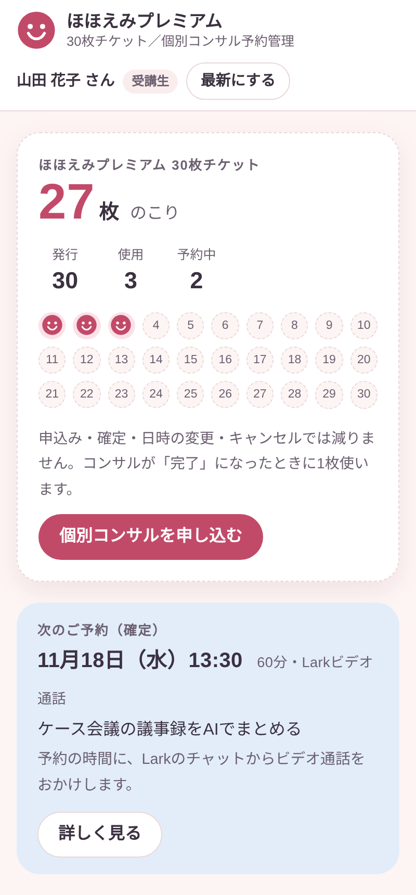
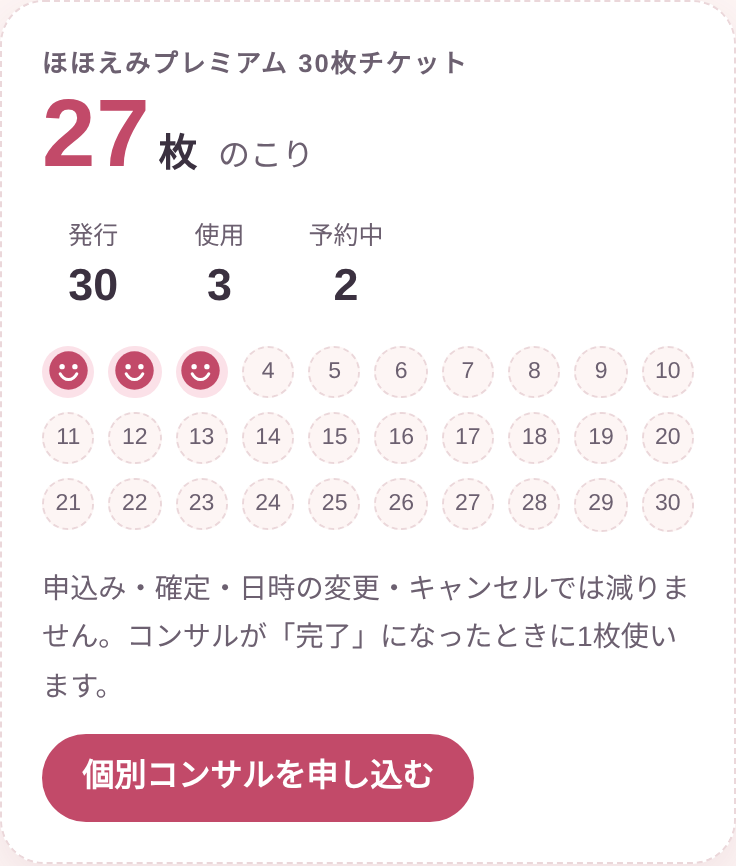
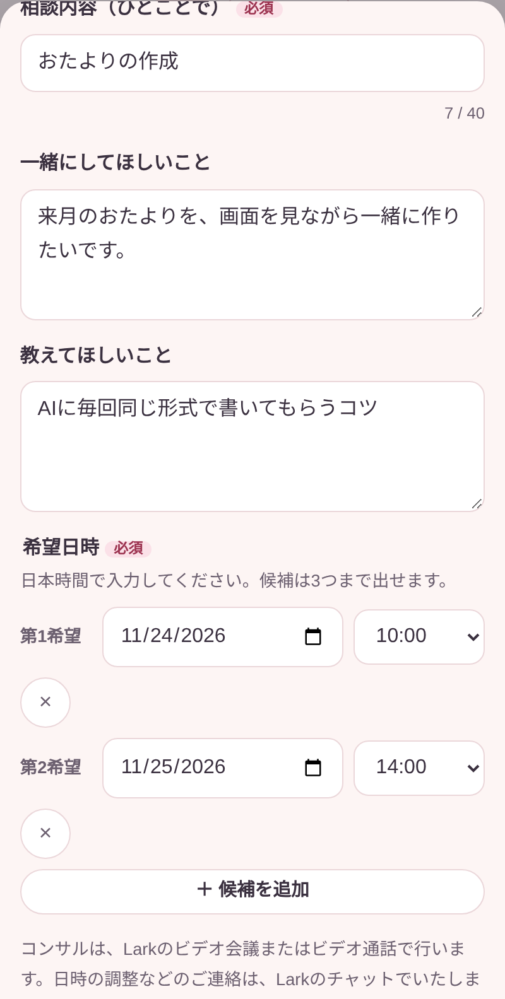
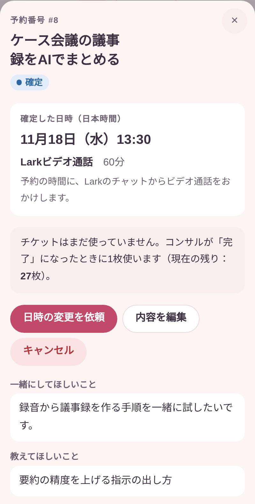
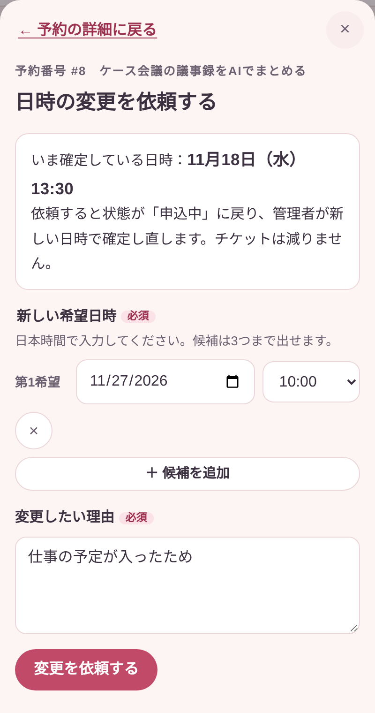
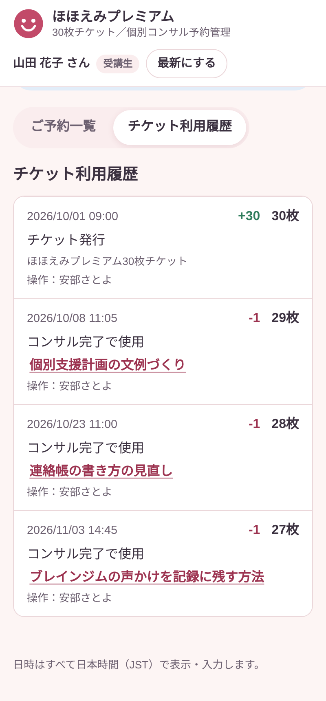

ほほえみプレミアム 30枚チケット
個別コンサル予約ページの使い方
個別コンサルの申込み、ご予約の確認、チケットの残り枚数の確認ができるページです。画面の写真は見本です（お名前や内容は例です）。
申込中→ 日時が決まると →
確定→ コンサルが終わると →
完了（1枚使用）
取りやめたときは キャンセル になります。チケットは使いません。

1ページを開く
Larkで届いた「専用リンク」を押すだけです
- Larkのチャットでお送りした専用リンクを押します。
- 上にご自身のお名前が出ていれば、あなたのページです。
- ブックマーク（お気に入り）に入れておくと、次からすぐに開けます。
このリンクはあなた専用です。ほかの方には転送しないでください。リンクを知っている人は、あなたとして申込みやキャンセルができてしまいます。
ログインやパスワードは要りません。スマホでもパソコンでも使えます。

2残り枚数を見る
チケットの残りは、いちばん上のカードで分かります
- 大きな数字が、残りの枚数です。
- 「発行」「使用」「予約中」の数も確認できます。
- 使った枚数だけ、スタンプ（にこにこマーク）が付きます。
申込み減りません
日時の確定減りません
日時の変更減りません
キャンセル減りません
コンサルの完了1枚使います

3申し込む
「個別コンサルを申し込む」から入力します
- チケットのカードにある「個別コンサルを申し込む」を押します。
- 「相談内容（ひとことで）」を入れます（40文字まで）。
- 「一緒にしてほしいこと」「教えてほしいこと」を入れます。
- 希望日時を日本時間で入れます。「＋ 候補を追加」で第3希望まで出せます。
- いちばん下の「申し込む」を押します。
状態が 申込中 になれば、受付完了です。日時の確定をお待ちください。
お子さんや保護者の方のお名前など、個人が分かる情報は書かないでください。

4確定を確認する
日時が決まると「確定」に変わります
- ご予約一覧の行を押すと、詳しい内容が開きます。
- 確定した日時と、実施方法が表示されます。Larkのチャットでもお知らせします。
- 下のほうで、連絡事項と変更の履歴も見られます。
Larkビデオ会議
Larkのチャットに届く参加リンクから入ります。
Larkビデオ通話
予約の時間に、Larkのチャットからビデオ通話がかかってきます。

5変更・キャンセル
予約を開いて、ボタンを選びます
内容を直したい
「内容を編集」を押します。申込中なら、希望日時も直せます。
決まった日時を変えたい
「日時の変更を依頼」を押し、新しい希望日時と理由を入れます。
取りやめたい
「キャンセル」を押します。申込中・確定のどちらでもできます。
日時の変更を依頼すると、いったん 申込中 に戻ります。新しい日時が決まると 確定 になります。
変更やキャンセルで、チケットが減ることはありません。
完了 になった予約は変更できません。訂正が必要なときは、Larkのチャットでご連絡ください。

6利用履歴を見る
いつ使ったかは「チケット利用履歴」で確認できます
- 「チケット利用履歴」のタブを押します。
- 発行された日と、使った日が順に並びます。
- 右側に、そのときの増減と残り枚数が出ます。
画面を開いたままにしていたときは、右上の「最新にする」を押すと、最新の内容になります。
困ったとき
- 「このリンクは使えません」と出る
- リンクが新しくなっている可能性があります。Larkのチャットでお問い合わせください。最新のリンクをお送りします。
- 申し込めない
- チケットの残りが0枚か、申込中・確定のご予約が残り枚数に達しています。今のご予約が完了してからお申し込みください。
- リンクをなくした、ほかの方に送ってしまった
- Larkのチャットでお知らせください。新しいリンクをお送りします。
- 「通信できませんでした」と出る
- 電波の良い場所で、もう一度お試しください。
- 残り枚数が合わない気がする
- 「チケット利用履歴」で確認できます。おかしいときは、Larkのチャットでご連絡ください。